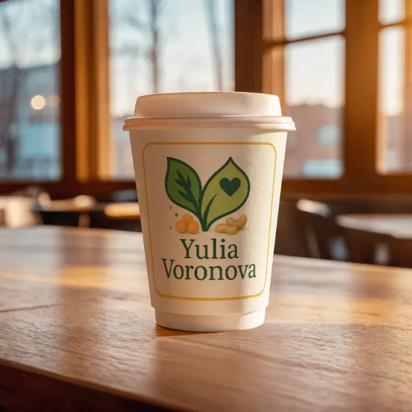
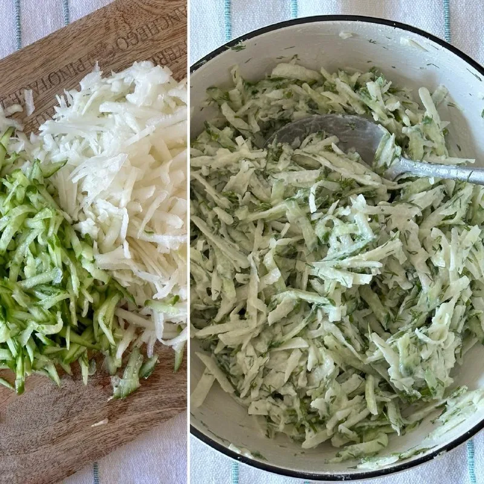
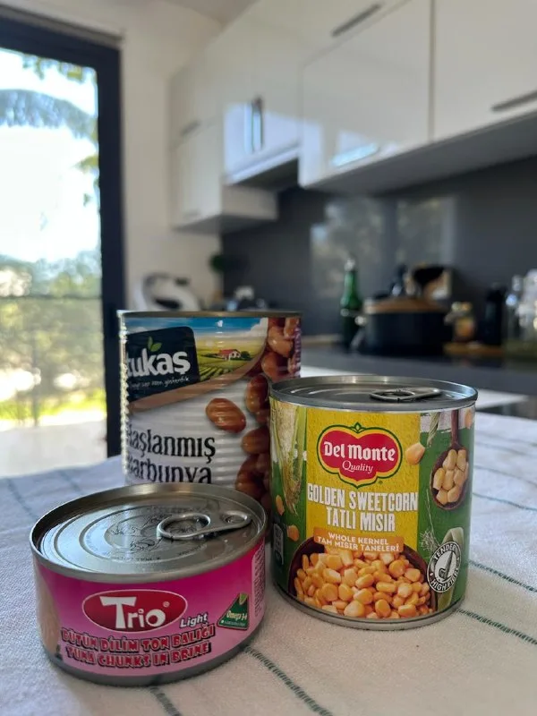
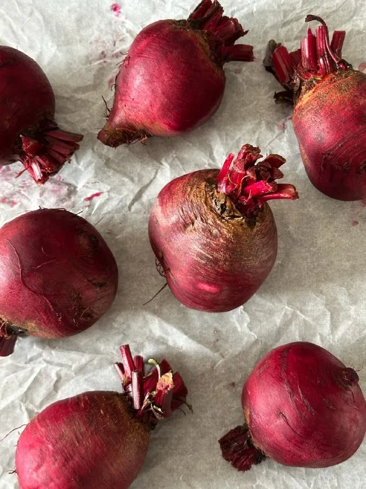
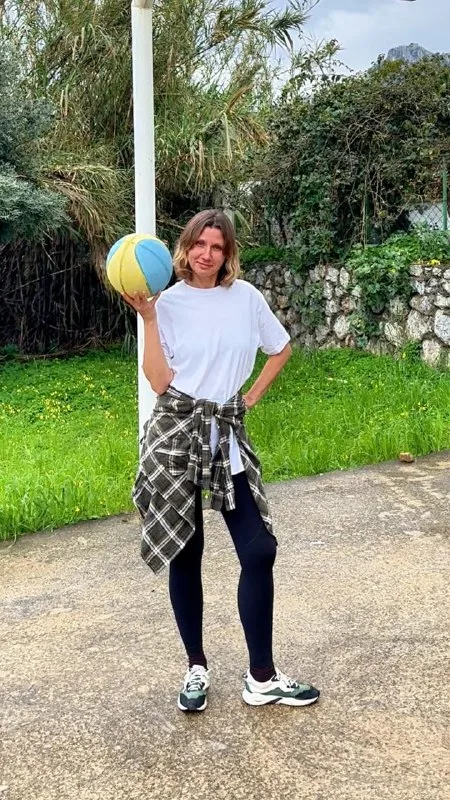
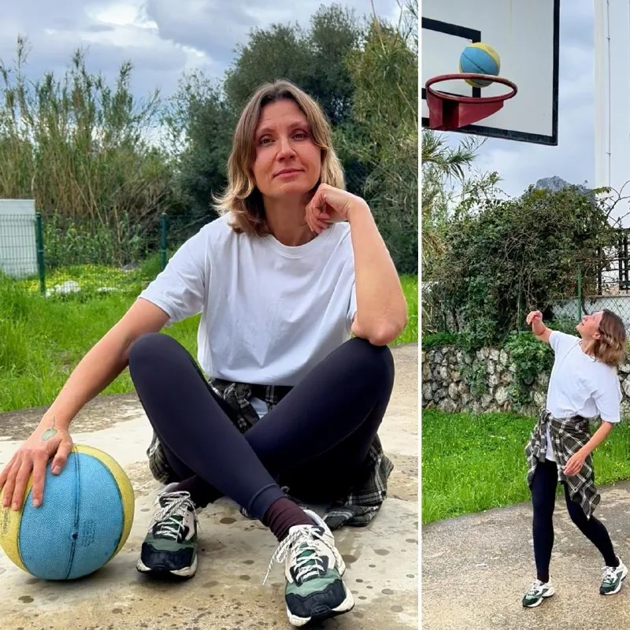

Как вы знаете, у меня есть каналы в Дзене и ВК. И там в комментарии порой приходят очень интересные люди со своими радикальными позициями. Вот немножко скринов оттуда. Мой собеседник ссылался на...
Читать в Telegram
Заинтриговала? Недавно мои дети захотели йогурт. Они вообще к молочке довольно равнодушны (ну, кроме сыра и мороженого - тут они всегда первые 🍦🧀). Но раз попросили - пошла я смотреть, что есть...
Читать в Telegram
Вчера остров накрыла мощная пыльная буря из Африки. Такое случается иногда, но эта была особенно сильной - видимость была почти нулевая. Сегодня уже легче, но воздух всё ещё далек от чистоты. В...
Читать в Telegram
Готовится молниеносно, съедается ещё быстрее! Сейчас эти овощи можно найти на полках в магазинах, поэтому рекомендую! Берем дайкон, зеленую редьку или кольраби. У меня на Кипре пик кольраби,...
Читать в Telegram
Пока мы ждем первый настоящий урожай, хочу поговорить о продуктах, которые нас очень выручают, когда времени мало, но хочется, чтобы все были сыты и ели с пользой. Консервы - есть ли в них толк? ...
Читать в Telegram
Пока сезон свежих овощей только на подходе, наш лучший выбор - корнеплоды. И мой фаворит здесь - свекла. Делюсь лайфхаком: я запекаю сразу несколько штук на неделю. Они отлично лежат в...
Читать в Telegram
В прошлом посте мы определили, что кость - это живая ткань, которой нужен не только кальций. Еще важны: витамин Д, жиры, ну и сами, собственно, минералы. 1️⃣ Витамин Д: Без него кальций просто...
Читать в Telegram
Друзья, на днях посмотрела вебинар по остеопорозу и до сих пор под впечатлением. У меня случилось «открытие на открытии». Мы привыкли думать, что кости - это больше про кальций. Но это...
Читать в Telegram